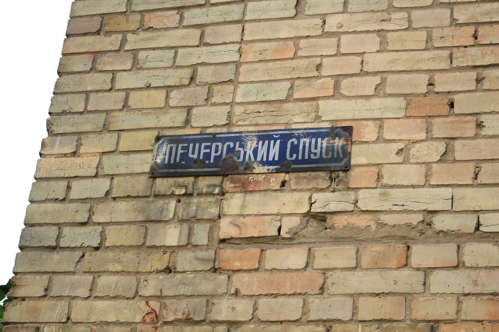
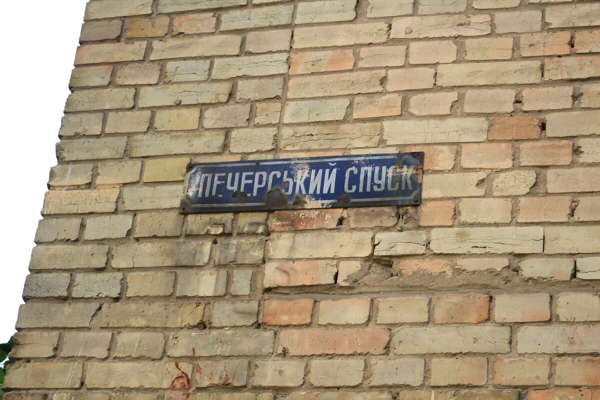

Адресні покажчики
Майже півтори сотні вулиць у Києві змінили назву протягом останніх двох років. Це означає, що адресні таблички доведеться замінити на тисячах будинків. Нам здається, це чудова можливість навести, нарешті, лад у тому «зоопарку» табличок, які за відсутності єдиного стандарту створили хаос на стінах будинків. Ми розробили ескізний зразок і нещодавно підписали меморандум з міським головою щодо розробки нових адресних покажчиків на основі нашого прототипу.
Генератор покажчиків ⍺
Створіть та завантажте макет покажчика для свого будинку. Поки у тестовому режимі працює лише з малими типорозмірами.
За лаштунками проекту: адресні покажчики
Проблема
В Києві відсутня єдина система адресних покажчиків. За декілька десятиліть на стінах будинків назбиралась чимала кількість різноманітних табличок. Всі вони різних розмірів, кольорів, ба навіть з різним інформаційним наповненням. На одних ми бачимо лише назву вулиці, на інших — ще й номер будинку, під’їзду, кількість квартир, фото Батьківщини-матері, а в найгіршому випадку ще й рекламу.


 

Калейдоскоп київських адресних покажчиків
У більшості адресних табличок шрифтова робота низької якості, хоча шрифт є найважливішою складовою таблички, де, окрім написів, немає інших інформаційних елементів. Зараз розмір таблички фіксований, а назву вулиці втискують в задані розміри, тому написи нівечать, хто як може: розтягують, звужують, зменшують. На тлі такої вакханалії зі шрифтом можна вже й не згадувати про засилля непотрібних декоративних елементів, які засмічують таблички і погіршують читабельність.
У чому виклик?
Адресна табличка — це немов візитівка міста. Навіть якщо табличка має сумнівний естетичний вигляд, але в її дизайні присутній характерний елемент, він одразу відрізняє це місто від інших.
Київ складається з нашарувань різноманітних архітектурних стилів та планувальних систем: вузькі вулиці з модерновими будинками початку минулого століття, широкі проспекти спальних районів з панельною забудовою, великі промислові райони розміром з невелике місто, а на додачу ще й столітні храми. Разом з тим, в Києві майже не збереглось історичних кварталів, споруджених в єдиному стилі. Більшість центральних вулиць — це пазл, який зібрано з розташованих поруч будинків, між якими прірва в масштабі, стилістиці та даті спорудження. Але єдина система табличок повинна однаково добре виглядати та використовуватись в будь-якому середовищі.